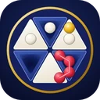

Projeler
Araçların hepsi tarayıcıda çalışır; kurulum gerekmez. Akıllı tahtada tam ekran kullanılabilir.
-
Master Class: Sayılar ve DNA'ları
masterclass.muhsinengin.comAsal sayıları, bölenleri ve fonksiyonların büyümesini oyunlarla, 3B görsellerle ve sıralama tablosuyla keşfetmek için.
-
Öğretmen Masası
masterclass.muhsinengin.com/ogretmenDestek, BYF, ÖYG ve PÜY yıllık planlarındaki her kazanım için akıllı tahtada açılan etkinlik ve ders akışı. Kazanımı deftere kopyala, etkinliğe tek dokunuşla geç.
-
Geometri Atölyesi
masterclass.muhsinengin.com/geometriCetvel ve pergelle çizim masası, Öklid görevleri, üçgenin gizli merkezleri, katlanıp açılan cisimler ve bir sorunun görselinden şekil kuran Soru Masası.
-
Haftanın Soruları
masterclass.muhsinengin.com/haftaHer pazartesi bir matematik ve bir geometri olimpiyat sorusu, pazar akşamı tam çözümü. Geçmiş sorular yazdırılabilir bir soru bankasında birikir.
-
SekmeÖlçer
sekmeolcer.muhsinengin.comTelefonun mikrofonuyla topun yere çarpma seslerini dinleyip sekme katsayısını ölçen bir saha aracı. Fizik dersinde deney defteri gibi kullanılır.

MEDAR
Tescil sürecindeMuhsin ENGİN's Dynamic Array Rotation. Altıgen bir tahtada, 120° dönen üçgenlerle oynanan iki kişilik özgün bir strateji oyunu. Oyunu görYayıncılar ve iş birliği içinBana yazın
PİKRAM
HazırlanıyorBilim projelerini yazarken öğrenciye ve danışman öğretmene eşlik eden bir proje asistanı.